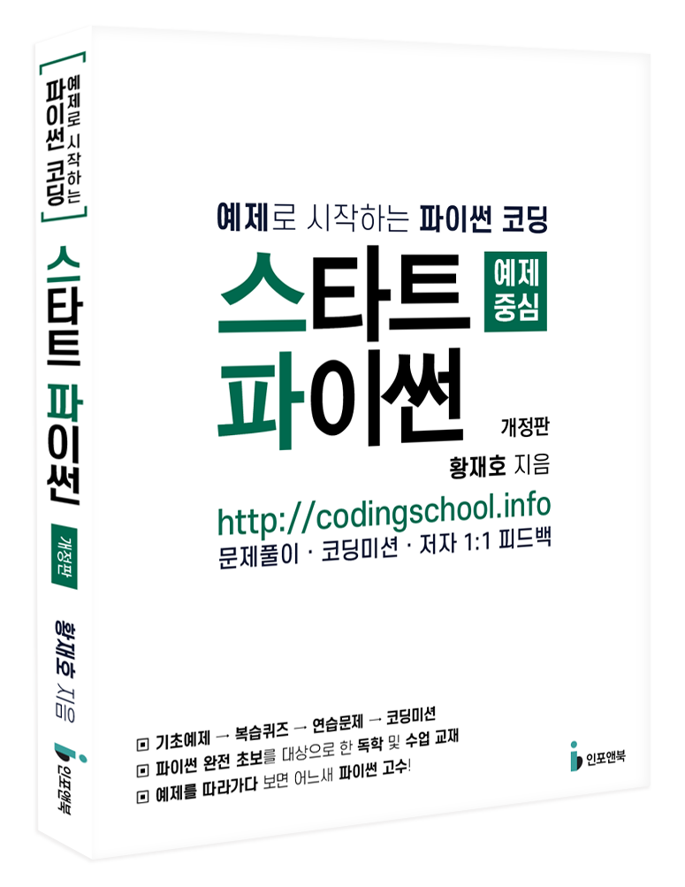

01 누구를 위한 책인가?
- 프로그래밍 입문을 원하는 분
- C++ 언어는 익숙한 데 파이썬은 처음인 분
- 대학 및 교육 기관에서 파이썬을 강의하려는 분
- C++ 언어는 익숙한 데 파이썬은 처음인 분
- 대학 및 교육 기관에서 파이썬을 강의하려는 분
02 이 책의 특징
- 재미있고 다양한 실습 예제
- YOUTUBE 동영상 콘텐츠 제공
- 다양한 난이도의 연습문제 다수 제공
- YOUTUBE 동영상 콘텐츠 제공
- 다양한 난이도의 연습문제 다수 제공